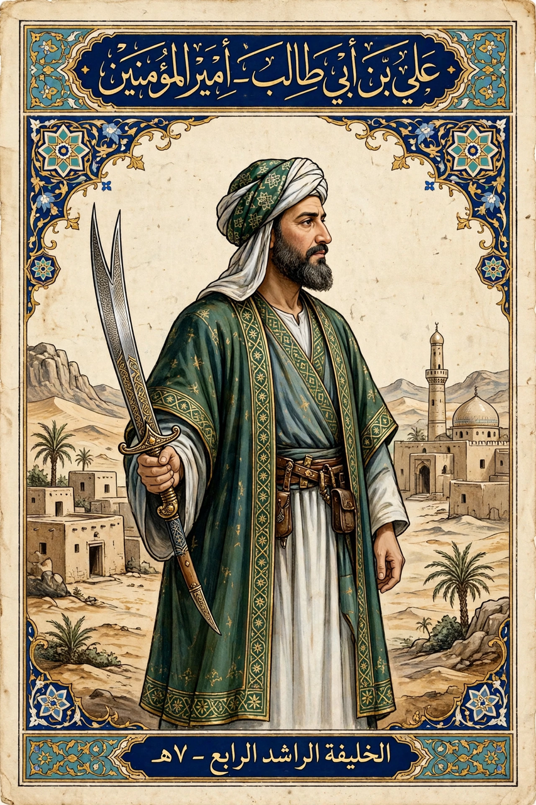

| Ali ibn Abi Talib | |
|---|---|
 | |
| Born | c. 600 CE, Mecca |
| Died | 661 CE, Kufa |
| Caliphate | 656–661 (fourth Rashidun caliph) |
| Spouse | Fatimah |
| Children | Hasan, Husayn, Zaynab, among others |
Ali ibn Abi Talib (c. 600–661) was the cousin and son-in-law of Muhammad, the fourth Rashidun caliph (656–661) in Sunni tradition, and the first Imam in Shia Islam. A central figure in Islam, his life and contested succession lie at the origin of the Sunni–Shia split.
Raised in Muhammad's household, Ali was among the first to accept Islam — in Shia and some Sunni accounts the first male believer. He married Muhammad's daughter Fatimah, fought in nearly all the early battles including Badr, Uhud and the Trench, and famously carried the standard at Khaybar. Shia sources cite the event of Ghadir Khumm as Muhammad's designation of Ali as successor; Sunnis interpret it as a declaration of friendship.
After Muhammad's death in 632, Abu Bakr was chosen caliph at Saqifa; Ali initially withheld allegiance for some months, then served as an adviser under Abu Bakr, Umar and Uthman, though he was passed over in succession councils. Disputes over Fatimah's inheritance of Fadak remained a lasting grievance.
After Uthman's assassination in 656, Ali became caliph in Medina and moved his capital to Kufa. His caliphate was consumed by the First Fitna: the Battle of the Camel against Aisha, Talha and Zubayr; the Battle of Siffin against Mu'awiya, governor of Syria and founder-to-be of the Umayyad Caliphate; arbitration; and the Kharijite secession and Battle of Nahrawan. In 661 Ali was assassinated in Kufa's mosque by the Kharijite Ibn Muljim. He is buried, by tradition, at Najaf, site of the Imam Ali Mosque.
Ali is revered for piety, courage, eloquence and justice; the collection of sermons and letters attributed to him, Nahj al-Balagha, is a classic of Arabic literature. In Twelver Shi'ism he is the first of the Twelve Imams and the Prophet's rightful successor (wali).